Mit dem Berichtssystem verwaltet dein Verein den kompletten Spielbetrieb an einem Ort: Spielpläne und Ergebnisse, Aufstellungen, Spielerverfügbarkeiten, die Adressliste sowie Bilder. Die wichtigste Funktion ist die Erstellung von Spielberichten – wahlweise selbst geschrieben oder mit Unterstützung durch eine künstliche Intelligenz (KI), die auf Wunsch mehrere Textvarianten in unterschiedlichen Schreibstilen vorschlägt, den Text korrigiert und gezielt nach deinen Vorgaben anpasst.
Dieses Handbuch richtet sich an alle Anwenderinnen und Anwender. Es beschreibt die Bedienung Schritt für Schritt. Funktionen, die nur Administratoren betreffen, sind gebündelt im hinteren Kapitel Konfiguration beschrieben.
Rufe die Internetadresse deines Vereins-Berichtssystems auf. Du gelangst zuerst zur Anmeldeseite.
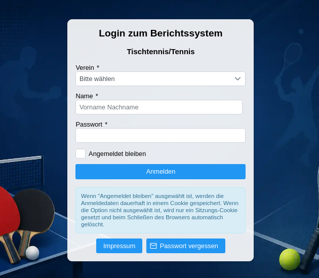
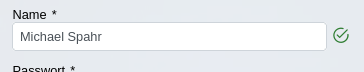
Klicke auf „Passwort vergessen", gib deine E-Mail-Adresse ein und bestätige. Du erhältst die Zugangsdaten anschließend per E-Mail.
Der Spielplan ist dein Ausgangspunkt für Berichte, Aufstellung und Ergebnisse. Der Einstieg unterscheidet sich je nach Sportart:
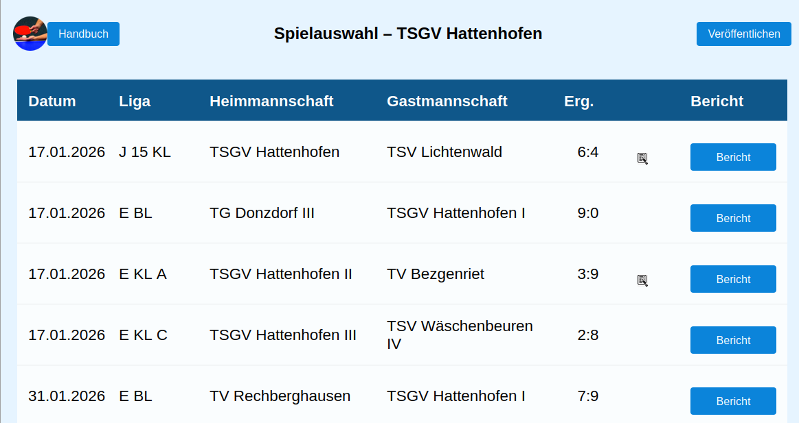
Der Spielplan dient nicht nur als Übersicht über die Begegnungen, sondern auch als zentraler Einstiegspunkt in die wichtigsten Funktionen des Berichtssystems. Dabei wird zwischen spielbezogenen Funktionen, Funktionen für freie Berichte und allgemeinen Funktionen unterschieden.
Zu jedem Spiel stehen verschiedene Schaltflächen zur Verfügung, die sich direkt auf die ausgewählte Begegnung beziehen:
Unterhalb der Spieltabelle befindet sich der Bereich für freie Berichte. Freie Berichte sind keinem bestimmten Spiel zugeordnet und eignen sich beispielsweise für Turnierberichte, Saisonrückblicke, Vereinsveranstaltungen, Jugendaktionen oder sonstige Vereinsnachrichten.
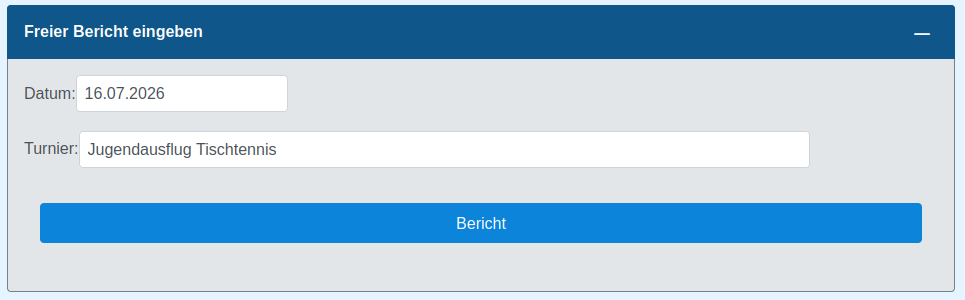
Es gibt zwei Möglichkeiten, mit freien Berichten zu arbeiten:
Über die Schaltfläche Bericht gelangst zur Eingabemaske des freien Berichts. Freie Berichte verwenden denselben Editor und dieselben Funktionen wie Spielberichte. Sie können daher ebenfalls mit der KI-Unterstützung erstellt werden (siehe Kapitel 7) und anschließend über die Veröffentlichungsfunktion auf der Homepage oder für die Zeitung bereitgestellt werden.
Am unteren Rand des Spielplans befinden sich weitere Schaltflächen, die nicht zu einem einzelnen Spiel gehören und unabhängig von der ausgewählten Begegnung verwendet werden können:
Mit Zurück kehrst du von einer Unterseite jederzeit wieder zum Spielplan zurück.
Im Tennis wählst du hier zunächst deine Liga aus. Anschließend siehst du die zugehörige Tabelle mit der Platzierung deiner Mannschaft und gelangst zum Spielplan dieser Mannschaft. Die Tabellen- und Ligadaten können später auch automatisch in einen Bericht einfließen.
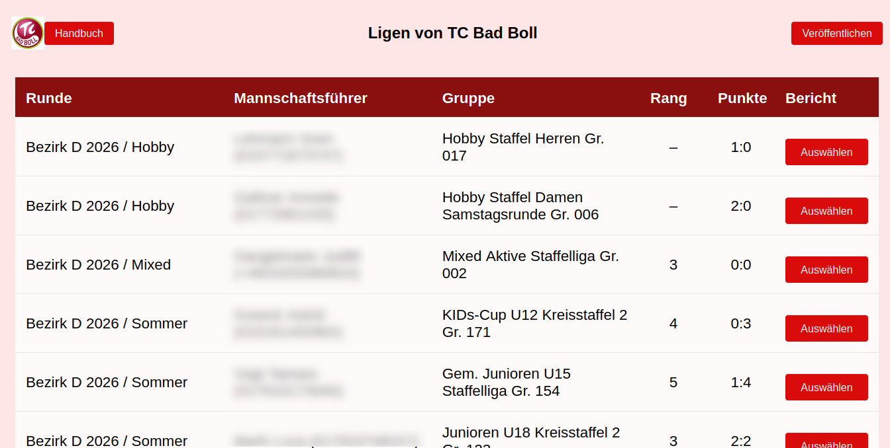
Zu jedem Spiel kann ein Bericht erstellt, geprüft, angepasst und veröffentlicht werden. Der Bericht-Editor ist die zentrale Arbeitsfläche: Hier schreibst du den Text, fügst ein Bild hinzu, lässt ihn von der Rechtschreibprüfung und der KI kontrollieren und schließt ihn am Ende ab.
Wähle im Spielplan das gewünschte Spiel. Du siehst die Bericht-Seite mit dem Spieltitel (Heim – Gast, Datum, Ergebnis) und den möglichen Aktionen.
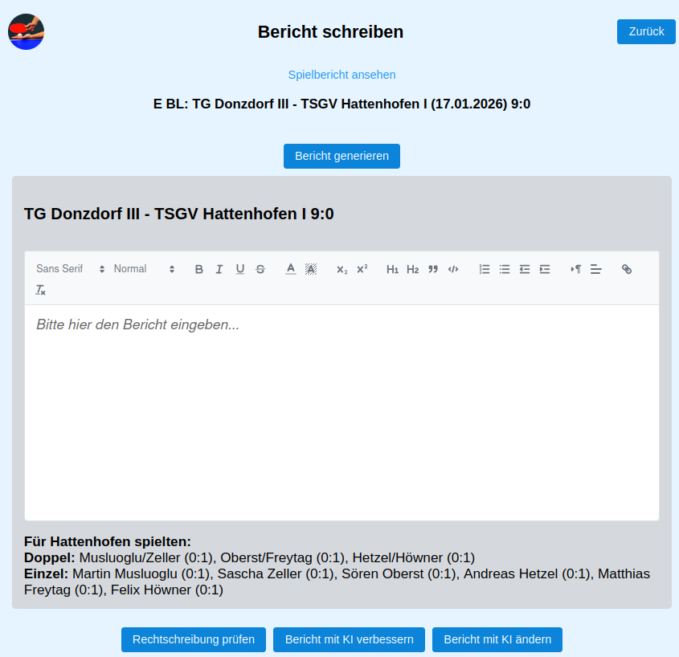
Der Editor besteht aus zwei Feldern: der Überschrift und dem eigentlichen Berichtstext. Im Textfeld steht dir eine Werkzeugleiste zur Verfügung, mit der du den Text formatieren kannst – zum Beispiel fett oder kursiv, Überschriften, Aufzählungen und Absätze.
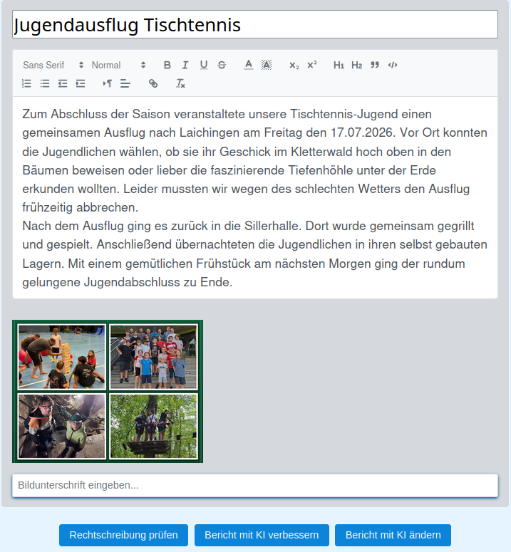
Über den Bildbereich fügst du ein Foto samt Bildunterschrift hinzu. Wähle das Bild zuerst aus und speichere anschließend den Bericht. Erst nach dem Speichern wird das Bild unter dem Bericht angezeigt. Mit Bild bearbeiten lässt sich der Bildausschnitt anpassen (zuschneiden), mit Bild löschen entfernst du es wieder.
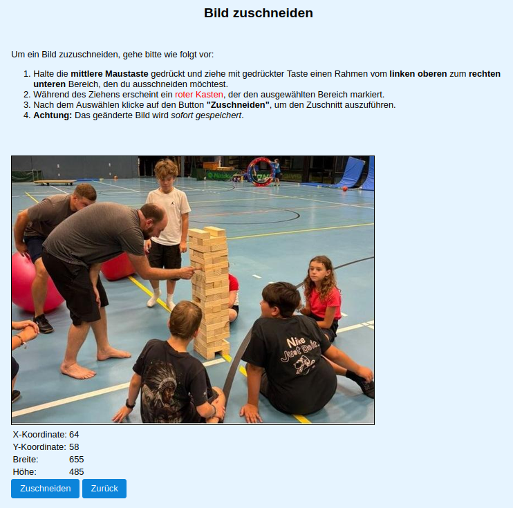
Mit Speichern sicherst du deinen aktuellen Stand, ohne die Seite zu verlassen. Speichere regelmäßig – besonders bei längeren Texten und immer dann, wenn du einen selbst geschriebenen oder aus der KI übernommenen und korrigierten Bericht fertig bearbeitet hast.
Mit Rechtschreibung prüfen wird der Text automatisch auf Rechtschreibung, Grammatik, Zeichensetzung und Stil untersucht. Die gefundenen Stellen erscheinen rechts in der Tabelle „Gefundene Fehler" mit dem beanstandeten Text, einem Vorschlag und einer Erklärung.
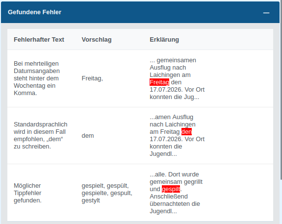
Während die Rechtschreibprüfung vor allem formale Fehler findet, prüft Bericht mit KI verbessern den Text inhaltlich und sprachlich. Der Bericht wird dazu anonymisiert an die KI übergeben, die Korrektur- und Verbesserungsvorschläge zurückliefert.
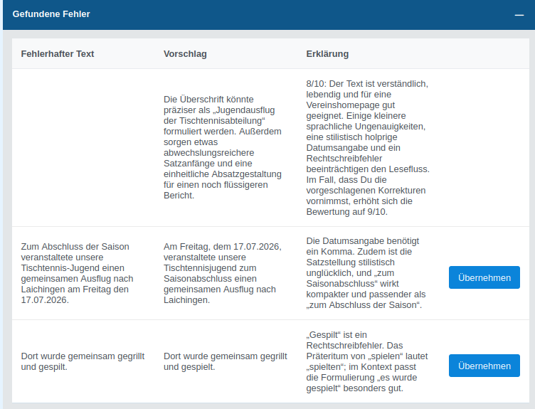
Hier steht bei passenden Vorschlägen ein Übernehmen zur Verfügung, mit dem die Änderung direkt in den Text eingesetzt wird. Führst du die Prüfung erneut aus, meldet die KI nur noch echte Fehler und besonders unglückliche Formulierungen.
Möchtest du den Bericht gezielt umgestalten, öffnest du mit Bericht mit KI ändern eine eigene Seite. Dort legst du über mehrere Felder fest, wie der Text angepasst werden soll. Alle Felder sind optional – nur ausgefüllte Angaben werden berücksichtigt.
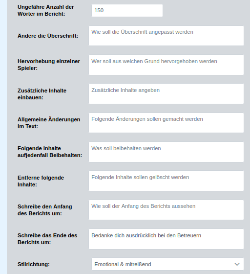
| Option | Wofür |
|---|---|
| Ungefähre Wortanzahl | Gewünschte Länge des Berichts (Richtwert). |
| Überschrift ändern | Vorgabe, wie die Überschrift formuliert werden soll (nur bei freien Berichten). |
| Hervorhebung einzelner Spieler | Bestimmte Spieler stärker in den Vordergrund stellen. |
| Zusätzliche Inhalte einbauen | Fehlende Aspekte ergänzen (Szenen, Eindrücke). |
| Allgemeine Änderungen im Text | Übergreifende Anpassungen ohne festen Abschnitt. |
| Inhalte beibehalten | Passagen, die auf jeden Fall erhalten bleiben sollen. |
| Inhalte entfernen | Aussagen, die nicht im Bericht erscheinen sollen. |
| Anfang / Ende umschreiben | Einstieg bzw. Abschluss neu gestalten. |
| Stilrichtung | Sprachliche Ausrichtung; ohne Auswahl bleibt der Stil erhalten. |
Nach dem Start erzeugt die KI eine neue Fassung und stellt sie dem bisherigen Text gegenüber, sodass du beide Versionen direkt vergleichen kannst.
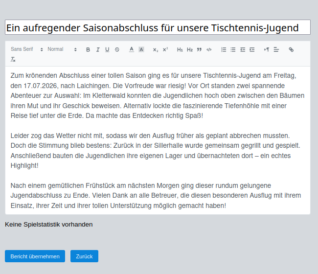
Bist du mit der neuen Fassung zufrieden, übernimmst du sie mit Bericht übernehmen zurück in den Editor. Andernfalls verwirfst du sie und passt deine Vorgaben an.
Ist der Bericht fertig geschrieben, korrigiert und gespeichert, schließt du ihn ab.
Mit E-Mail senden werden die zuständigen Personen – z. B. Webmaster und Presseverantwortliche/r – automatisch informiert, dass ein neuer Bericht vorliegt. Die Empfänger-Adressen sind im System hinterlegt (siehe Konfiguration).
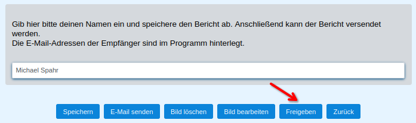
Die Schaltfläche Freigeben ist nur bei berechtigten Personen sichtbar. Nach dem Freigeben kann der Bericht nicht mehr verändert werden und ist zur Veröffentlichung bereitgestellt. Die eigentliche Veröffentlichung auf Homepage und in der Zeitung erfolgt anschließend über den Bereich Veröffentlichung (Kapitel 9).
Die KI-Erstellung ist die Hauptfunktion des Systems: Aus wenigen Angaben schlägt die KI komplette Spielberichte vor – in mehreren Stilvarianten, die du anschließend übernehmen, korrigieren und weiter bearbeiten kannst. Du startest sie über Bericht generieren auf der Bericht-Seite.
Nach dem Öffnen siehst du oben die Spieldaten und darunter die Eingabemöglichkeiten. Die offiziellen Spieldaten (Ergebnisse, Aufstellung) werden – sofern vorhanden – automatisch berücksichtigt; du musst sie nicht abtippen.
Der typische Ablauf:
Im Feld „Was soll im Bericht erwähnt werden" gibst du der KI die inhaltlichen Vorgaben. Du musst nichts ausformulieren – Stichworte genügen. Was hier sinnvoll ist, hängt von der Berichtsart ab:
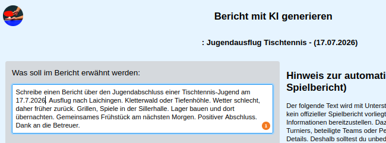
Im Panel „Erweiterte Einstellungen für den Bericht" steuerst du, wie der Bericht inhaltlich und stilistisch angelegt wird. Die Voreinstellungen sind bereits auf einen typischen Zeitungsbericht abgestimmt.
Strg+Mausklick). Zu Beginn sind bereits drei
sinnvolle Stile vorausgewählt; zu jedem Stil wird ein Beispieltext
angezeigt. Für jeden gewählten Stil erstellt die KI einen eigenen
Textvorschlag. Nach jeder Generierung wird die Stilauswahl
zurückgesetzt.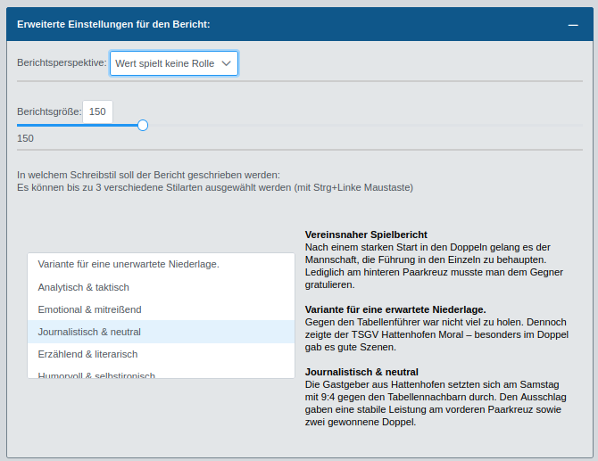
Im Panel „Erweiterte Einstellungen des KI-Moduls" beeinflusst du das Verhalten der KI selbst. Auch hier sind die Voreinstellungen sinnvoll gewählt und müssen normalerweise nicht verändert werden.
Über zusätzliche optionale Panels lassen sich außerdem Spielplan, Tabelle und Bilanzen übergeben, damit die KI z. B. das nächste Spiel erwähnen oder einen Sieg gegen den Tabellenführer einordnen kann.
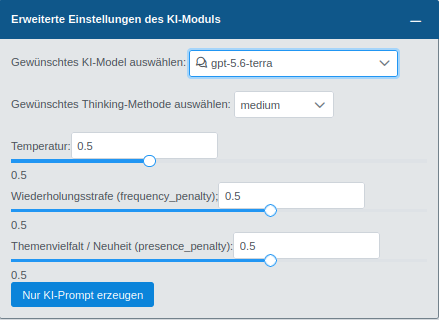
Klicke auf Bericht generieren. Die Erstellung läuft im Hintergrund und kann – je nach Modell – bis zu etwa einer Minute dauern. Währenddessen:
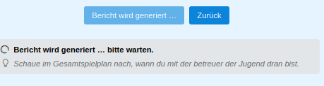
Sobald der Text fertig ist, erscheinen die Vorschläge – je gewähltem Schreibstil eine Variante. Lies sie in Ruhe durch und wähle die passendste aus.
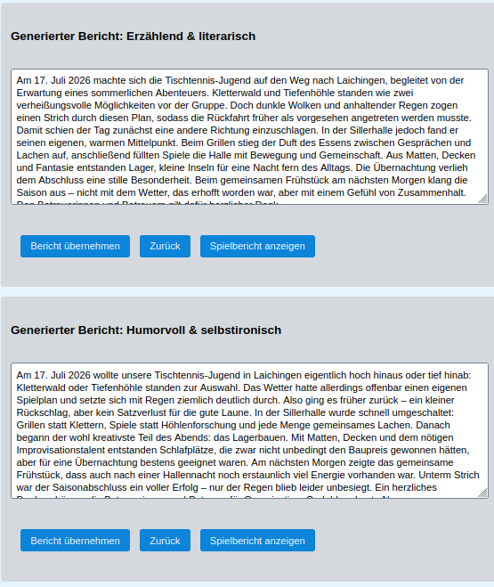
Mit Bericht übernehmen unter einer Variante wird dieser Text in den Editor übernommen. Dort bearbeitest du ihn wie einen selbst geschriebenen Bericht weiter: Rechtschreibung prüfen, mit KI verbessern oder ändern, speichern und schließlich abschließen (E-Mail senden / Freigeben).
Bereits vor dem eigentlichen Ergebnis wird rechts angezeigt, mit welcher genauen Anweisung die KI gefüttert wurde und welche Namensersetzungen zum Datenschutz verwendet wurden. So bleibt nachvollziehbar, worauf der Text beruht.
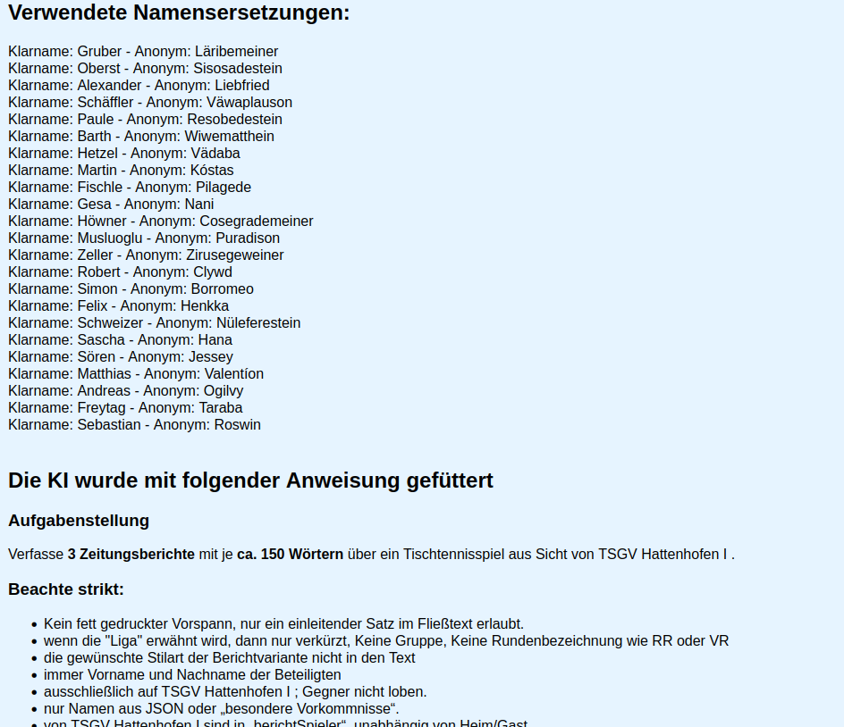
Über die Schaltfläche Liste der vorhandenen freien Berichte im Spielplan gelangst du zu einer Übersicht aller bereits angelegten freien Berichte. Freie Berichte sind keinem bestimmten Spiel zugeordnet und eignen sich beispielsweise für Saisonrückblicke, Turnierberichte, Vereinsfeste, Jugendveranstaltungen oder sonstige Vereinsnachrichten.
In dieser Übersicht können vorhandene Berichte ausgewählt, bearbeitet und veröffentlicht werden.
Zusätzlich können auch hier neue freie Berichte angelegt werden. Hierzu wird ein Datum sowie ein frei wählbarer Titel eingegeben. Nach einem Klick auf Setzen wird der neue Bericht angelegt und kann anschließend über die Schaltfläche Bericht bearbeitet werden.
Im Gegensatz zu Spielberichten ist die Überschrift eines freien Berichts vollständig frei wählbar. Darüber hinaus stehen sämtliche Funktionen des Berichtssystems zur Verfügung, darunter verschiedene Schreibstile, KI-gestützte Texterstellung, KI-Verbesserungen und die Veröffentlichung auf Homepage oder Zeitung.
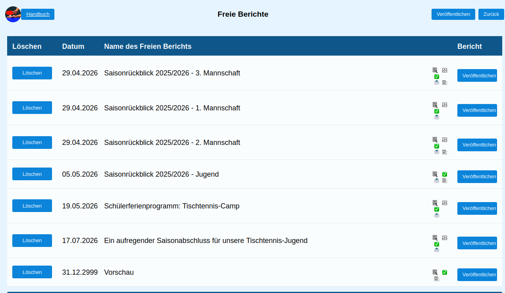
Neben der manuellen Erstellung freier Berichte stehen auch spezielle KI-gestützte Funktionen zur Verfügung:
Nach der Freigabe (siehe Kapitel 6.6) werden Berichte veröffentlicht – auf der Vereins-Homepage und/oder in der Zeitung („'s Blättle"). Den Bereich erreichst du über die Schaltfläche Veröffentlichen (im Spielplan bzw. bei den freien Berichten, sobald ein Bericht freigegeben ist).
Es gibt zwei Wege:
Hier veröffentlichst du einen Spielbericht. Über den Umschalter oben blendest du wahlweise nur die freigegebenen oder alle Berichte ein und wählst die Ziel-Homepage aus. In der Liste zeigen Symbole je Spiel den Status: Bericht vorhanden, Bild vorhanden, freigegeben, auf der Homepage veröffentlicht und im „'s Blättle" veröffentlicht. Mit Veröffentlichen in der Zeile lädst du den Bericht in die Vorschau.
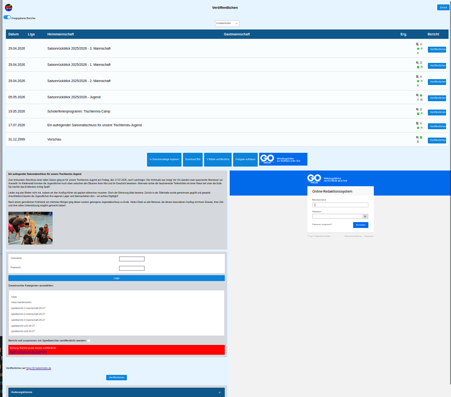
Melde dich mit Username und Passwort an der Homepage an, wähle die gewünschte(n) Kategorie(n) und klicke unten auf Veröffentlichen. Der Beitrag erscheint dann auf der angezeigten Domain. Wurde ein Bericht bereits veröffentlicht, erscheint ein Hinweis mit Link.
Für die Zeitung nutzt du In Zwischenablage kopieren (Text) und bei Bedarf Download Bild. Beides fügst du im Online-Redaktionssystem der Zeitung ein. Anschließend markierst du den Bericht mit 's Blättle veröffentlicht, damit der Status stimmt. Mit Freigabe aufheben kannst du eine Freigabe bei Bedarf zurücknehmen.
Hier fasst du mehrere freigegebene Berichte zu einem einzigen Beitrag zusammen. Wähle die gewünschten Spiele mit der Checkbox aus und lege die Reihenfolge über die Pfeil-Schaltflächen fest. Mit Berichte zusammenfassen entsteht ein gemeinsamer Beitrag mit gemeinsamer Überschrift, Bild und zusammengesetztem Text.
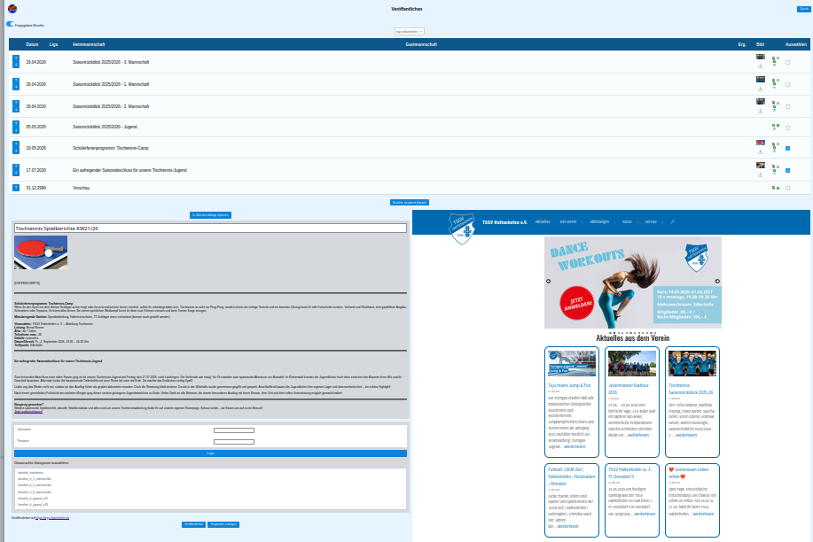
Die Veröffentlichung funktioniert wie bei den Einzelberichten: an der Homepage anmelden, Kategorie wählen und Veröffentlichen. Für die Zeitung steht ebenfalls In Zwischenablage kopieren bereit. Über Beitrag aufrufen bzw. Hauptseite anzeigen kannst du das Ergebnis direkt prüfen.
Die Aufstellung ist vor allem für Jugendspiele gedacht. Der Jugendleiter legt hier fest, welche Spieler auflaufen und wie die Doppelaufstellung aussehen soll. So weiß der Betreuer des Jugendspiels genau, wer spielt und in welcher Doppelpaarung.
Wähle die spielberechtigten Spieler aus und ergänze bei Bedarf im Feld „Zusätzliche Info" Hinweise je Spieler. Angezeigte Verfügbarkeiten helfen bei der Planung. Speichere die Aufstellung rechtzeitig vor dem Spiel.
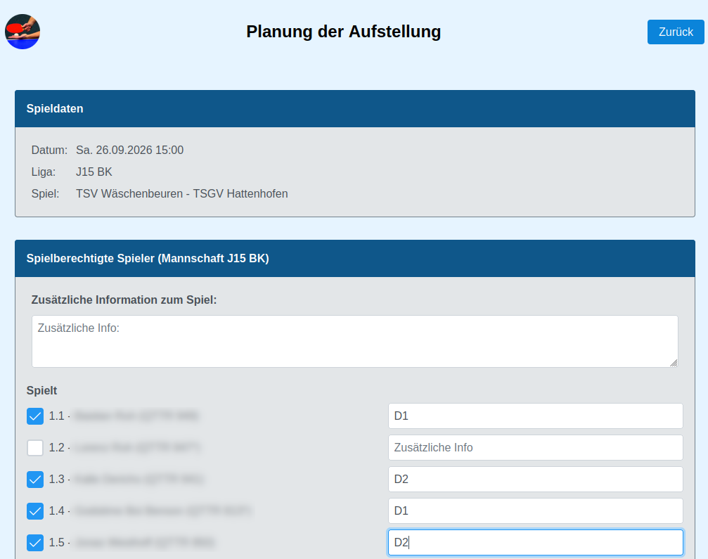
Der Gesamtspielplan zeigt alle Mannschaften und Runden auf einen Blick. Je nach Spielart hast du hier unterschiedliche Eingabemöglichkeiten:
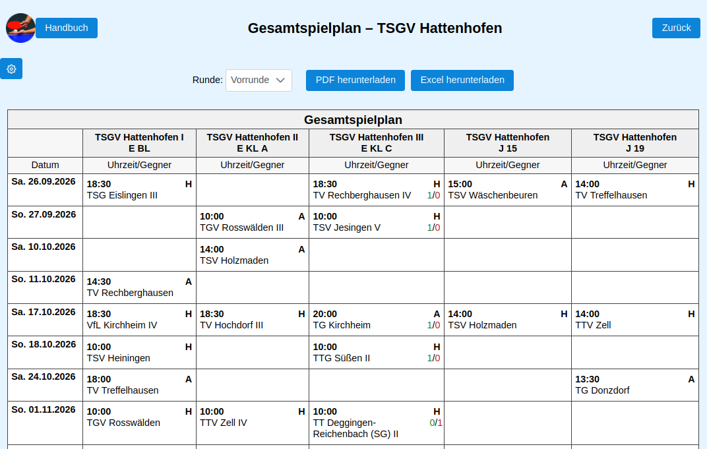
Die Betreuer der Jugendspiele werden in der Regel zu Saisonbeginn vom Jugendleiter eingetragen. In der Liste sind nur die Initialen der eingetragenen Betreuer zu sehen; fährst du mit der Maus darüber (Maus-über), erscheint der volle Name. Mit einem Klick auf die Initialen kannst du den Namen ändern und den Rückmeldestatus des Betreuers einsehen (mehr dazu in Kapitel 13 „Bestätigung").
Bei den Spielen der Erwachsenen werden im Gesamtspielplan die Verfügbarkeits-Rückmeldungen angezeigt und lassen sich hier auch ändern (siehe Kapitel 12.1 „Verfügbarkeit eintragen").
Du kannst dir einen persönlichen Gesamtspielplan zusammenstellen – zum Beispiel nur mit den Mannschaften und Runden, die dich interessieren. Diese Ansicht nutzt du temporär, ohne die allgemeine Darstellung zu verändern.
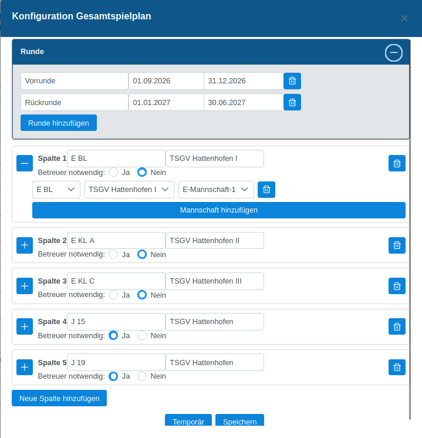
Aus deiner Zusammenstellung lässt sich mit einem Klick ein PDF oder eine Excel-Datei erzeugen und herunterladen – praktisch zum Ausdrucken, Weitergeben oder Weiterverarbeiten.
Die Verfügbarkeit richtet sich an die erwachsenen Spieler: Hier meldest du je Spiel zurück, ob du am Spieltag Zeit hast. Das ist mehr als eine einfache Zu- oder Absage: Über die verschiedenen Abstufungen kann der Mannschaftsführer die Aufstellung deutlich besser planen und frühzeitig reagieren – etwa versuchen, ein kritisches Spiel rechtzeitig zu verlegen, wenn absehbar zu wenige Spieler zusagen.
Wähle zunächst deinen Namen aus der Liste. Anschließend trägst du für jedes anstehende Spiel deine Verfügbarkeit über das Auswahlfeld ein. Optional kannst du je Spiel eine kurze Zusatzinformation ergänzen (z. B. „nur bis 20 Uhr" oder „im Urlaub"). Deine Angaben werden sofort gespeichert und für alle sichtbar.
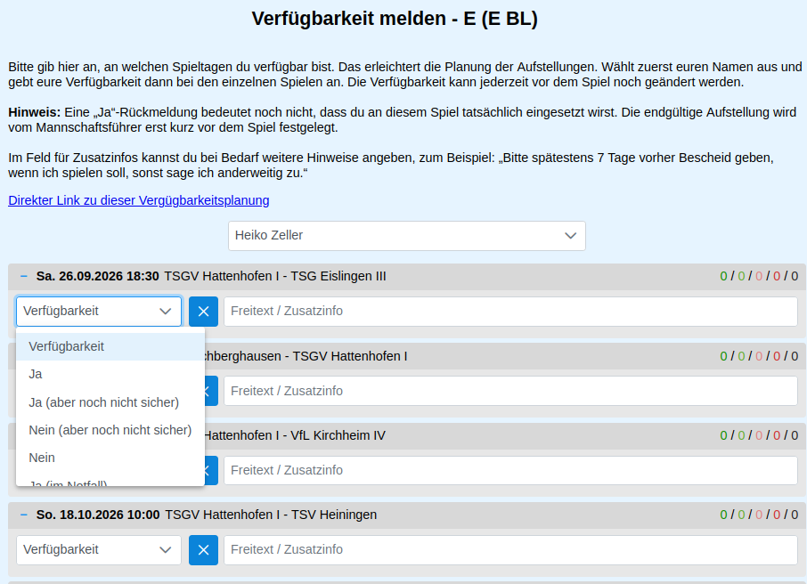
Es stehen fünf Abstufungen zur Verfügung:
| Option | Bedeutung |
|---|---|
| Ja | Ich bin sicher dabei. |
| Ja (aber noch nicht sicher) | Voraussichtlich dabei, aber noch nicht endgültig zugesagt. |
| Nein (aber noch nicht sicher) | Voraussichtlich verhindert, aber noch nicht endgültig. |
| Nein | Ich bin sicher nicht dabei. |
| Ja (im Notfall) | Eigentlich verhindert, springe aber ein, wenn es sonst nicht reicht. |
Die Übersicht zählt die Rückmeldungen je Spiel farbig aus, sodass sofort erkennbar ist, wie viele Spieler in welcher Abstufung zurückgemeldet haben. Dieselben Rückmeldungen sind auch im Gesamtspielplan (Kapitel 11) sichtbar und dort änderbar.
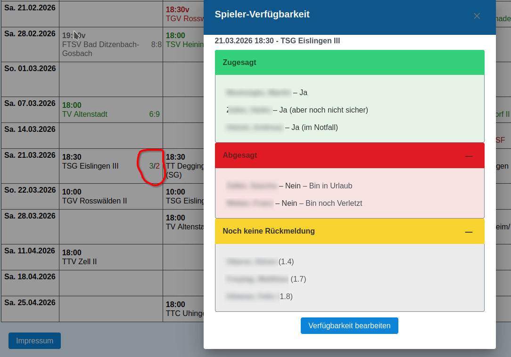
Die Bestätigung betrifft die Betreuer von Jugendspielen: Sie melden hier zurück, ob sie die Betreuung des jeweiligen Spiels übernehmen können.
Betreuer von Jugendspielen werden automatisch per E-Mail eingebunden – auch das übernimmt ein weiteres Programm.
14 Tage vor dem Spiel erhält der Betreuer eine E-Mail mit allen wichtigen Informationen: Spielcode und Pin, Spielort und Gegner. Sobald der Jugendleiter die Aufstellung eingetragen hat, ist diese ebenfalls in der Mail enthalten.
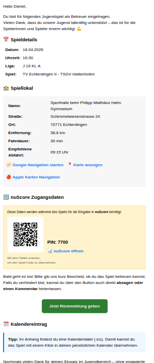
Über den Button in der E-Mail gelangst du direkt zur Bestätigungsseite.
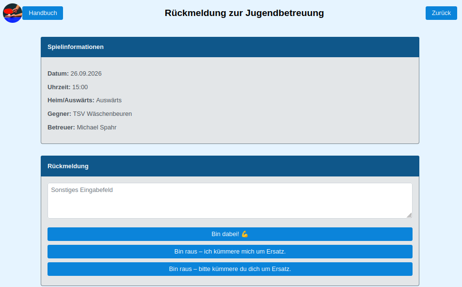
Auf der Bestätigungsseite kannst du auch absagen und dabei einen Ersatzbetreuer eintragen. Liegt dessen eigenes Spiel noch in der Zukunft, kannst du mit einem Klick die Spiele tauschen – du wirst dann für das ursprüngliche Spiel des Ersatzbetreuers eingetragen.
Sage möglichst frühzeitig ab, wenn du verhindert bist. So ist der Jugendleiter rechtzeitig informiert, dass es bei diesem Spiel personelle Probleme geben könnte, und kann gegensteuern.
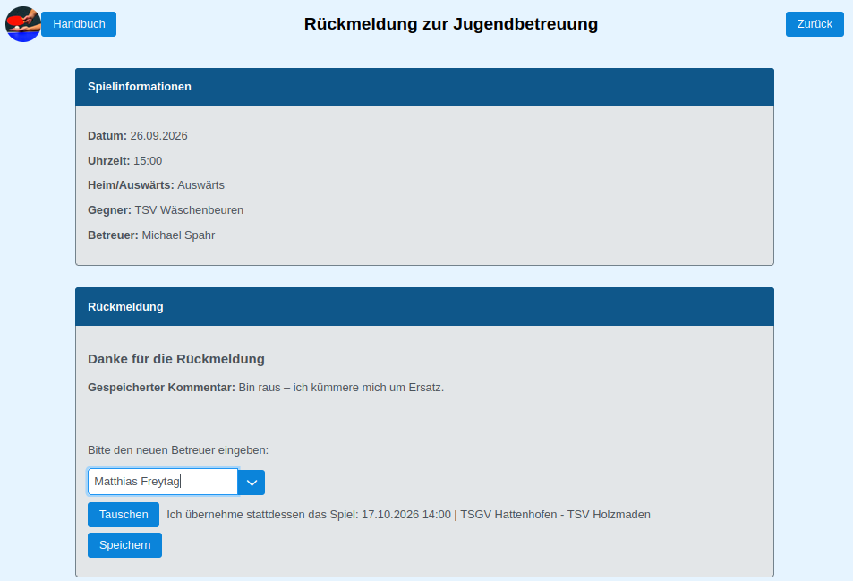
Die Adressliste enthält die Mitgliederdaten mit Such- und Filterfunktion. Über das Info-Symbol öffnest du alle Details eines Mitglieds. Änderungen werden protokolliert.
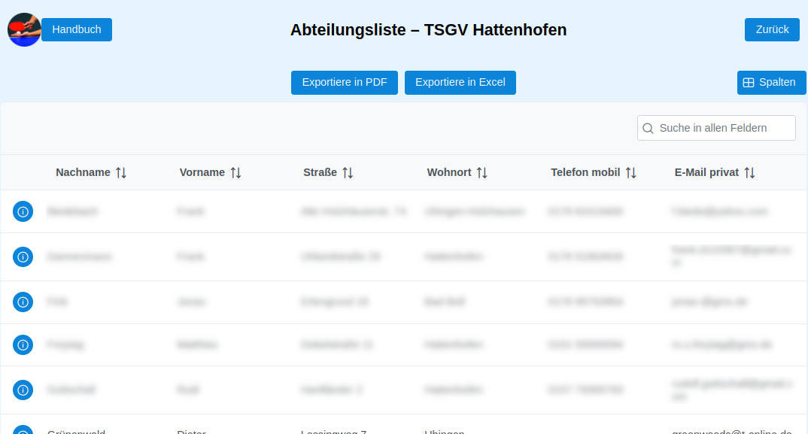
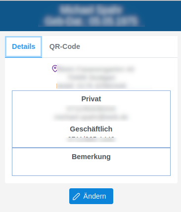
Jedes Mitglied kann seine eigenen Daten selbst aktualisieren – ohne dass jemand anderes Zugriff auf alle Einträge braucht. So funktioniert es:
Neben der Bearbeitung bestehender Einträge können auch neue Personen direkt in der Adressliste angelegt werden.
In der Bildergalerie werden die Bilder deines Vereins übersichtlich dargestellt. Sie dient vor allem dazu, einzelne Bilder mit einem Klick herunterzuladen – zum Beispiel, um sie für eine Diashow bei der Weihnachtsfeier zu verwenden. Das Bearbeiten eines Bildes für einen Bericht erfolgt dagegen direkt beim Schreiben des Berichts (siehe Abschnitt 6.2).
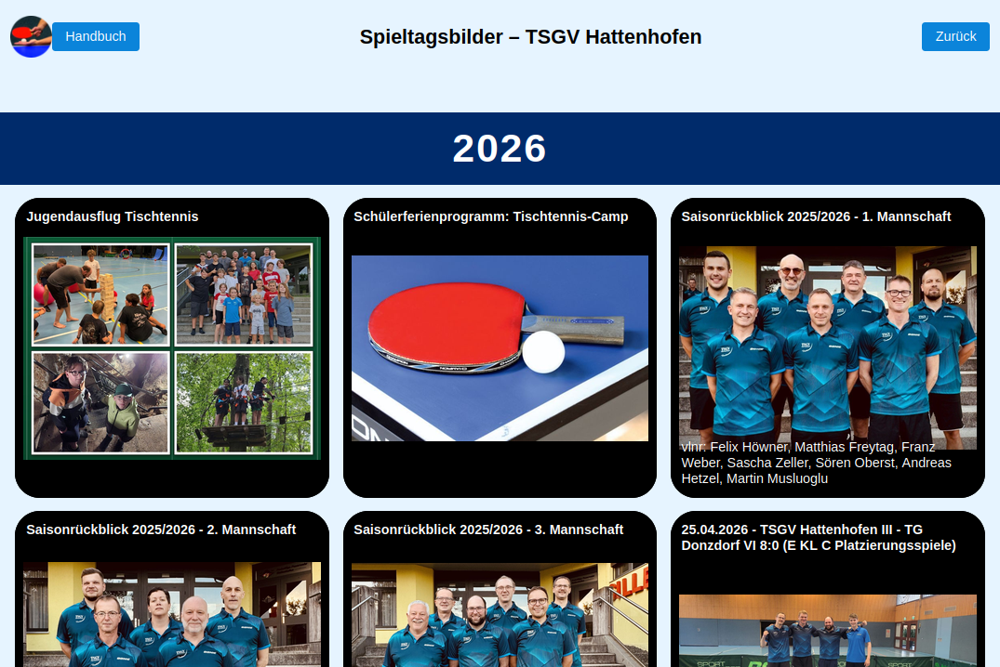
Spielcodes benötigst du für die Ergebniserfassung über nuScore. Über die Zwischenablage stehen dir der Spielcode und der Pin sowie ein QR-Code bereit.
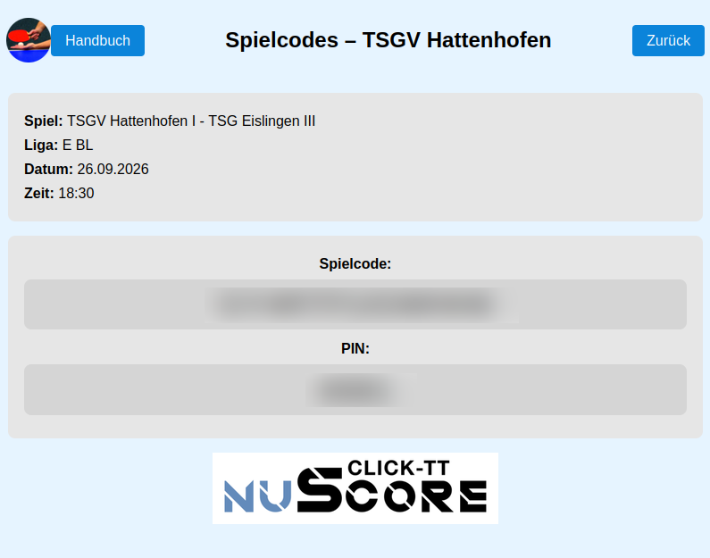
Über die Historie kannst du frühere Fassungen eines Berichts ansehen und einzelne Teile wiederherstellen. Du erreichst sie in der Bericht-Bearbeitung, indem du den Bereich „Änderungshistorie" aufklappst und „Alter Zustand wiederherstellen" wählst.
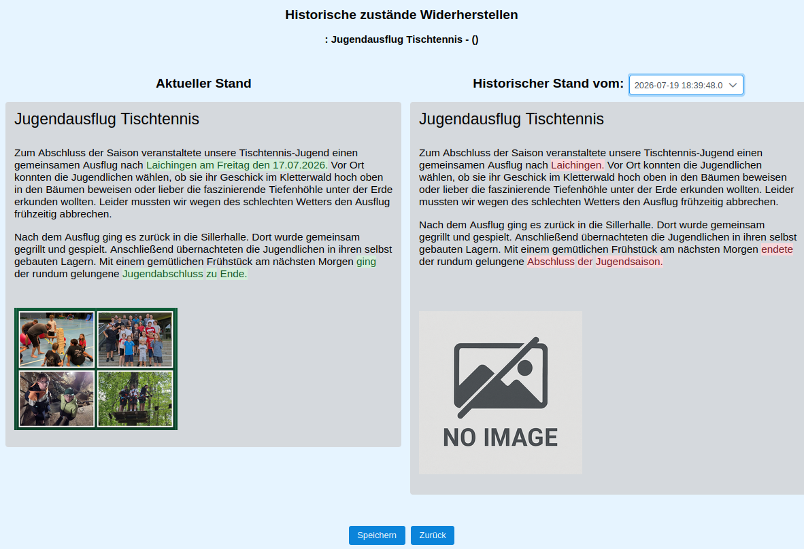
Ergänzungen und Streichungen werden farblich hervorgehoben, sodass du die Unterschiede zwischen den Fassungen leicht erkennst.
Alle über das System versendeten E-Mails werden archiviert. So kannst du jederzeit nachsehen, was wann an wen verschickt wurde – etwa die Benachrichtigungen beim Abschließen eines Berichts.
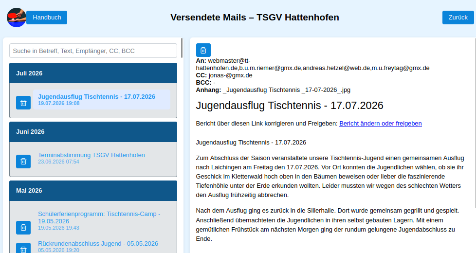
Über den Menüpunkt Impressum erreichst du die rechtlichen Angaben. Das Impressum bezieht sich auf den Entwickler des Programms (nicht auf den Verein).
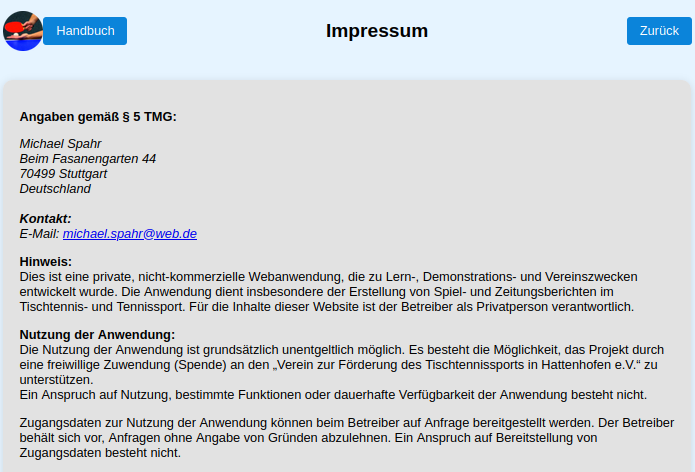
Die Konfigurationsseite ist durch eine Sicherheitsfreigabe geschützt: Du forderst ein Einmalpasswort an, das an die hinterlegte E-Mail-Adresse gesendet wird, und gibst es anschließend ein. Danach kannst du die Einstellungen bearbeiten.
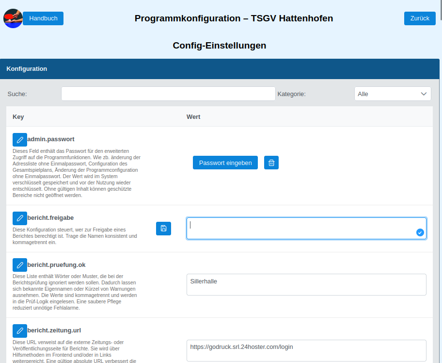
Die Einstellungen sind als Schlüssel/Wert-Einträge organisiert und lassen sich über Suche und Kategorie filtern. Typische Bereiche:
Über Konfiguration der iFrames-Internetseiten verwaltest du die eingebetteten Seiten bzw. Textbausteine, die z. B. auf der Vereins-Homepage angezeigt werden. Hier legst du fest, welche Inhalte unter welcher Überschrift eingebunden werden.
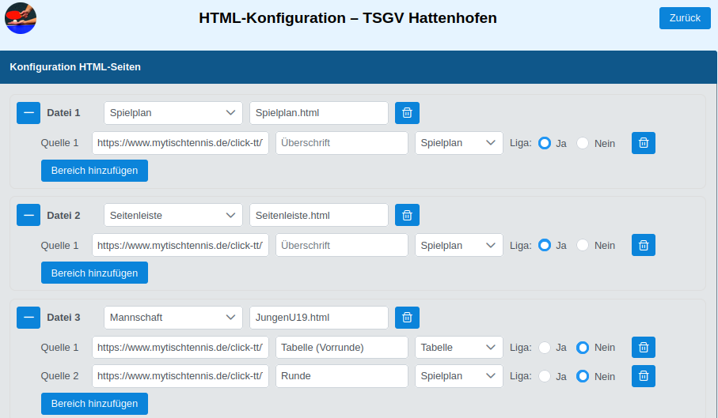
Über Importieren Spielcodes gelangst du zum Einlesen der Spielcodes. Die Codes werden aus der Quelle übernommen und stehen anschließend über die Zwischenablage (Kapitel 16) zur Verfügung.
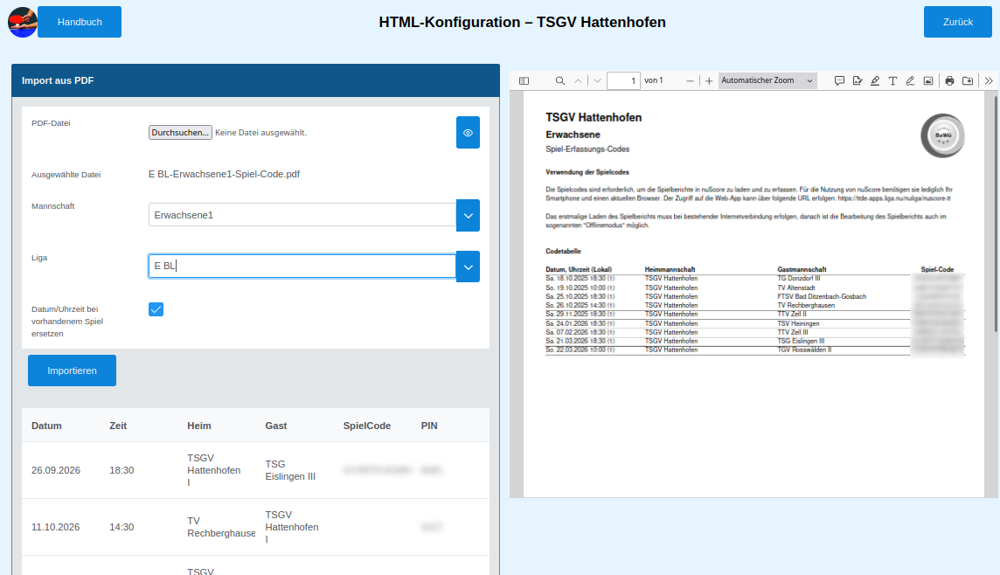
Über Importieren Aufstellung lassen sich bestehende Aufstellungsdaten einlesen, statt sie manuell zu erfassen.
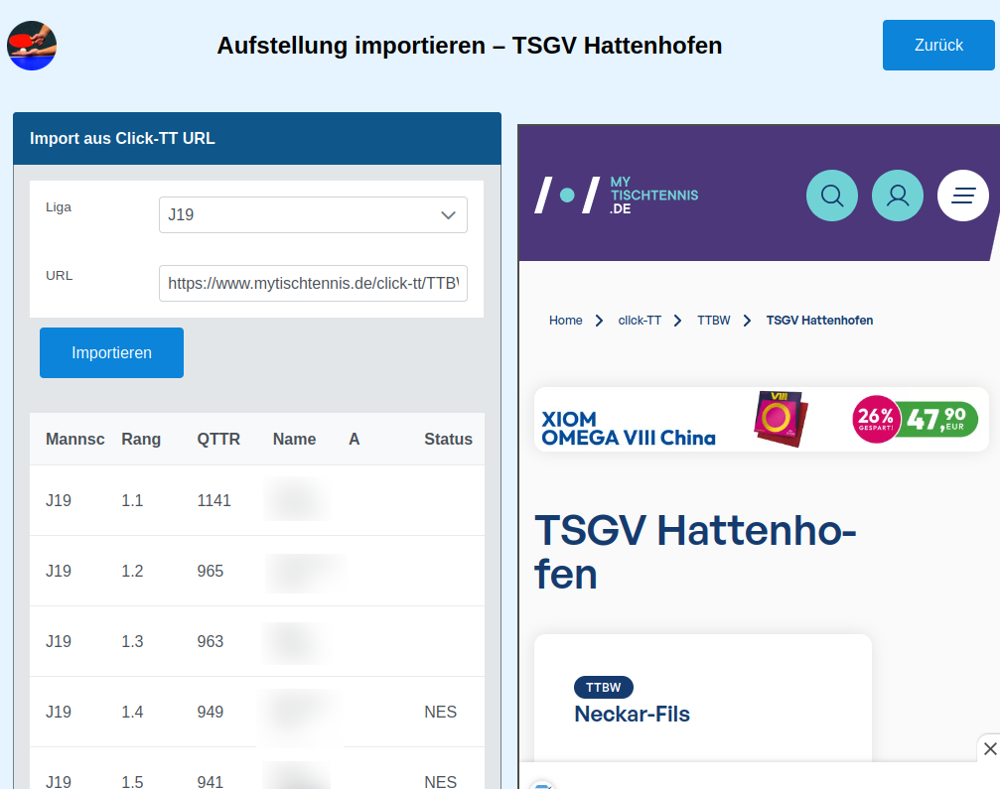
Mit Aktualisieren Homepage-Configs-Einträge werden die für die Homepage relevanten Konfigurationseinträge aufgefrischt. Diese Funktion benötigst du nur nach Änderungen an der Homepage-Anbindung.
Die folgenden Bildschirmfotos sind im Handbuch eingesetzt. Solange
noch kein echtes Foto vorliegt, erscheint der Platzhalter „Bild
folgt". Ersetze die gleichnamige Datei im Verzeichnis
handbuch/screenshots/
durch eine echte Aufnahme (PNG, Breite ca. 1000–1400 px) und
erzeuge das PDF anschließend neu.
| Abb. | Datei | Was fotografieren |
|---|---|---|
| – | 00-Titelseite.png |
Titelbild (im PDF ganzseitig als erste Seite, in der HTML groß vor dem Titel) |
| 1 | 01-anmeldung.png |
Anmeldeseite: Verein, Name, Passwort, „Angemeldet bleiben" |
| 2 | 02-anmeldung-namenspruefung.png |
Anmeldung mit erkanntem Namen (grünes Häkchen) und Tooltip |
| 3 | 03-startseite.png |
Start-/Übersichtsseite direkt nach der Anmeldung |
| 4 | 04-spielplan.png |
Spielplan (Tischtennis: alle Vereinsspiele; ggf. zweite Aufnahme für Tennis) |
| 5 | 05-liga-tabelle.png |
Tennis: Liga-Auswahl und Tabelle (Beispiel: Bad Boll, rotes Farbschema) |
| 6 | 06-bericht-uebersicht.png |
Bericht-Seite eines Spiels (Editor + Buttons + „in Bearbeitung") |
| 7 | 07-bericht-editor.png |
Editor: Überschrift (vorbelegt), Textfeld mit Werkzeugleiste, Bild, Buttons |
| 8 | 24-bild-bearbeiten.png |
Bild zuschneiden direkt beim Bericht |
| 9 | 30-rechtschreibung-pruefen.png |
Tabelle „Gefundene Fehler" nach Rechtschreibprüfung (ohne „Übernehmen") |
| 10 | 31-ki-verbessern.png |
KI-Verbesserung: Vorschläge mit „Übernehmen" |
| 11 | 32-ki-aendern-optionen.png |
Seite „Bericht mit KI ändern" mit den Optionsfeldern |
| 12 | 33-ki-aendern-vergleich.png |
Vorher/Nachher-Vergleich mit „Bericht übernehmen" |
| 13 | 34-bericht-freigeben.png |
Abschluss: „E-Mail senden" und „Freigeben" (bei berechtigter Person) |
| 14 | 08-ki-start.png |
KI-Bericht: Startansicht mit Spieldaten |
| 15 | 11-ki-besondere-vorkommnisse.png |
KI-Bericht: Feld „Was soll im Bericht erwähnt werden" |
| 16 | 09-ki-schreibstile.png |
Panel „Erweiterte Einstellungen für den Bericht" (Perspektive, Größe, Schreibstile) |
| 17 | 10-ki-erweiterte-einstellungen.png |
Panel „Erweiterte Einstellungen des KI-Moduls" (Modell, Kreativität, Feinregler) |
| 18 | 12-ki-wird-generiert.png |
Wartehinweis „Bericht wird generiert" mit Tipp |
| 19 | 13-ki-varianten.png |
Generierte Text-Varianten mit „Bericht übernehmen" |
| 20 | 14-ki-rechte-spalte.png |
Rechte Spalte: Anweisung an die KI und Namensersetzungen |
| 21 | 15-freie-berichte.png |
Freie Berichte / Zusammenfassung (Überschrift frei wählbar) |
| 22 | 43-veroeffentlichung-einzel.png |
Veröffentlichung Einzelberichte (Statusliste, Vorschau, Homepage/Zeitung) |
| 23 | 44-veroeffentlichung-sammel.png |
Veröffentlichung Sammelberichte (Auswahl, Reihenfolge, zusammenfassen) |
| 24 | 16-aufstellung.png |
Aufstellung planen (Spielerliste, Doppelaufstellung, Zusätzliche Info) |
| 25 | 20-gesamtspielplan.png |
Gesamtspielplan mit Betreuer-Zuordnung und Verfügbarkeiten (Initialen, Mouse-Over) |
| 26 | 35-gesamtspielplan-konfigurieren.png |
Persönlichen Gesamtspielplan zusammenstellen (mit PDF-/Excel-Download) |
| 27 | 41-verfuegbarkeit-eintragen.png |
Verfügbarkeit eintragen (Name wählen, Status setzen, Zusatzinfo) |
| 28 | 18-verfuegbarkeit.png |
Optische Darstellung der Rückmeldungen (farbige Zähler) |
| 29 | 39-betreuer-mail.png |
Automatische E-Mail an den Betreuer (Spielcode/Pin, Ort, Gegner, Aufstellung) |
| 30 | 19-bestaetigung.png |
Bestätigungsseite (über Button in der Mail erreichbar) |
| 31 | 40-bestaetigung-absage.png |
Absagen, Ersatzbetreuer eintragen, Spiele tauschen |
| 32 | 21-adressliste.png |
Adressliste (Mitgliederübersicht mit Suche) |
| 33 | 22-adressliste-info.png |
Adressliste: Info-Popup / eigene Daten ändern (Einmalpasswort) |
| 34 | 23-bilder.png |
Bildergalerie (Bilder herunterladen, z. B. für Diashow) |
| 35 | 26-zwischenablage.png |
Zwischenablage mit Spielcode, Pin und QR-Code |
| 36 | 27-historie.png |
Änderungshistorie mit farblichem Vergleich |
| 37 | 28-versendete-mails.png |
Versendete Mails (Archiv) |
| 38 | 29-impressum.png |
Impressum des Entwicklers |
| 39 | 36-config-seite.png |
Konfigurationsseite (Sicherheitsfreigabe, Einträge, Werkzeug-Buttons) |
| 40 | 37-config-iframes.png |
Konfiguration der iFrame-Internetseiten |
| 41 | 38-spielcode-importieren.png |
Spielcodes importieren (Import-/Parser-Seite) |
| 42 | 17-aufstellung-import.png |
Aufstellung importieren |